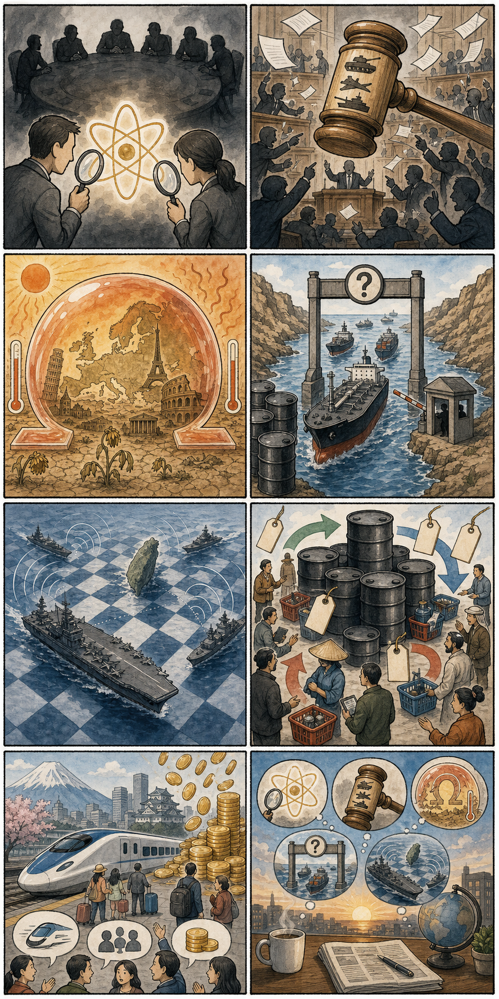
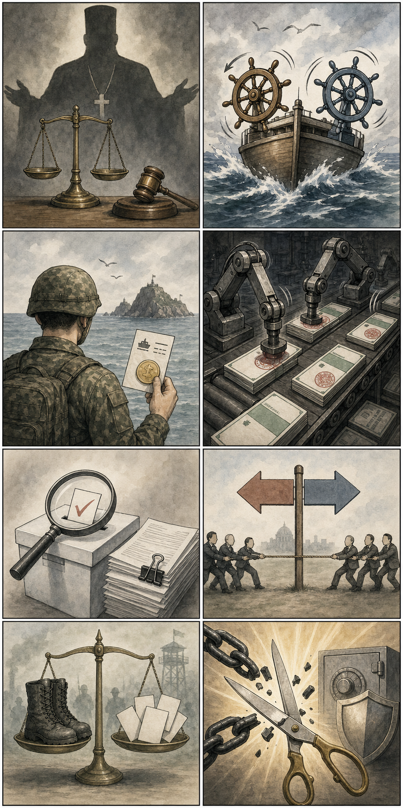

1
이란 핵사찰에 미국 조사관 동행 쟁점
📝 내용요약: 미국 측은 이란 핵사찰에 미국인 조사관도 포함될 것이라고 밝혔지만, 이란은 최종 합의 전 접근 논의에 선을 긋고 있습니다.
🔮 예상여파: 사찰 방식과 권한을 둘러싼 이견이 남아 협상 속도와 합의 가능성의 핵심 변수가 될 전망입니다.
기사보기미국증시 · 세계뉴스 · 국내뉴스를 애초에 하나의 페이지로 묶었습니다.
어제 연결 아이디어 3건 기준, 가장 최근 완료된 한국 정규장(2026-06-24) 하루 등락률입니다. 장중 데이터가 아닌 정규장 종가 기준이며, 투자권유가 아닌 추적용 정보입니다.
| 종목 | 어제 종가 | 전일 대비 | 등락률 | 테마 |
|---|---|---|---|---|
| 엑스게이트 356680.KQ | 22,350원 | +2,660원 | +13.51% | 양자암호·보안·양자컴퓨팅 |
| SK텔레콤 017670.KS | 91,000원 | +1,100원 | +1.22% | 양자암호통신·보안 인프라 |
| 삼성바이오로직스 207940.KS | 1,385,000원 | +112,000원 | +8.80% | 헬스케어/바이오 방어주·CDMO |
출처: 네이버 금융 일별시세, 2026-06-24 정규장 기준.
| 지수 | 종가 | 변동 | 등락률 |
|---|---|---|---|
| S&P 500 | 7,358.22 | -7.24 | -0.10% |
| Nasdaq | 25,476.63 | -110.40 | -0.43% |
| Dow | 51,848.90 | 182.06 | +0.35% |
| Russell 2000 | 2,986.63 | 11.15 | +0.37% |
| VIX | 18.63 | -0.86 | -4.41% |
대형 기술주는 쉬었지만, 유가 하락과 금리 하락에 힘입은 경기민감/금리민감 업종이 지수 하단을 받친 장세로 해석됩니다.
기사보기강세는 바이오텍(IBB), 산업재, 임의소비재, 유틸리티 쪽이 앞섰고, 약세는 반도체(SMH), 기술, 커뮤니케이션, 에너지가 두드러졌습니다. 국제유가 급락으로 에너지는 부진했고, 장기금리 하락은 유틸리티·주택·바이오 등 금리 민감 업종에 우호적으로 작용했을 가능성이 있습니다. 반면 대형 기술/AI는 쉬어가는 흐름이었습니다.
| 바이오텍(IBB) | IBB | +1.93% |
| 산업재 | XLI | +1.16% |
| 임의소비재 | XLY | +1.15% |
| 유틸리티 | XLU | +1.04% |
| 반도체(SMH) | SMH | -0.50% |
| 기술 | XLK | -0.62% |
| 커뮤니케이션 | XLC | -0.68% |
| 에너지 | XLE | -1.63% |
AI 숨고르기유가 급락금리 민감주 반등바이오 강세
| 종목 | 가격 | 등락률 | 원인/테마 |
|---|---|---|---|
| KBH KB Home | 61.51 | +16.65% | 주택건설주 반등. 금리 하락과 주택 관련 저가매수 가능성. |
| FOUR Shift4 Payments, Inc. | 44.22 | +14.35% | 결제/핀테크 성장 기대와 단기 숏커버 가능성. |
| RUN Sunrun Inc. | 14.42 | +12.57% | 금리 하락 시 태양광 금융비용 부담 완화 기대. |
| NTRA Natera, Inc. | 259.97 | +10.74% | 진단/바이오 성장주 선호 회복. |
| RH RH | 156.54 | +10.44% | 주택·소비재 동반 반등, 고급가구 소비 개선 기대. |
| BLDR Builders FirstSource, Inc. | 85.41 | +11.31% | 건자재·주택 사이클 민감주 강세. |
아래는 투자권유가 아닌 정보 제공 및 참고용 아이디어입니다. 매수·매도 판단은 본인 기준과 리스크 관리가 필요합니다.
| 한국 종목 | 연결 이유 | 단기 체크포인트 |
|---|---|---|
| SK하이닉스 | Micron 실적/메모리 가격 강세와 AI 서버용 HBM 수요 기대가 직접 비교 대상. | 외국인 순매수, HBM 가격/공급 뉴스, 원/달러 방향. |
| 삼성전자 | 메모리 업황 회복 기대와 대형주 수급의 대표 프록시. | 엔비디아/고객사 인증 뉴스, DRAM·NAND 가격 지표, 기관 수급. |
| 삼성바이오로직스 | 미국 바이오 ETF 강세와 방어적 성장주 선호가 국내 대형 바이오에 우호적일 수 있음. | CDMO 수주 뉴스, 환율 효과, 코스피 대형 성장주 로테이션. |
지수/ETF/종목 가격: Yahoo Finance chart/screener API, 조회 2026-06-25 06:36 KST. 뉴스: Yahoo Finance RSS, CNBC RSS. 기사 원문은 각 카드의 버튼에서 확인.
본 보고서는 투자 조언이 아니며, 최신 데이터 조회 기반의 시장 정보와 아이디어 정리입니다. 장중 데이터와 뉴스는 변동될 수 있습니다.
MORNING WORLD BRIEFING
2026-06-25 · 오전 7시 기준
📝 내용요약: 미국 측은 이란 핵사찰에 미국인 조사관도 포함될 것이라고 밝혔지만, 이란은 최종 합의 전 접근 논의에 선을 긋고 있습니다.
🔮 예상여파: 사찰 방식과 권한을 둘러싼 이견이 남아 협상 속도와 합의 가능성의 핵심 변수가 될 전망입니다.
기사보기📝 내용요약: 유럽 곳곳이 오메가형 열돔에 갇히며 40도를 넘는 폭염과 6월 최고기온 기록이 이어졌습니다.
🔮 예상여파: 냉방·전력·노동 안전 대책과 도시 폭염 대응을 둘러싼 정책 논의가 더 빨라질 가능성이 큽니다.
기사보기📝 내용요약: 미국 측은 이란이 호르무즈 해협 통행료 부과 의사가 없다고 확인했다고 밝히며, 사실과 다르면 협상 종료 가능성을 언급했습니다.
🔮 예상여파: 원유 수송 안전과 유가 안정 기대가 커졌지만, 발언 진위와 실무회담 결과에 따라 변동성이 남아 있습니다.
기사보기📝 내용요약: 중국 항공모함 전단이 대만해협 통과와 합동훈련 공개로 군사적 존재감을 확대했습니다.
🔮 예상여파: 대만과 주변국의 경계 수위가 높아지고, 해상·공중 우발 충돌 관리가 더 중요해질 전망입니다.
기사보기📝 내용요약: 일본에서 외국인 관광객의 신칸센 비용을 지원하는 방안을 두고 형평성과 관광 수익 논란이 제기됐습니다.
🔮 예상여파: 관광 활성화와 주민 부담 사이의 균형을 둘러싼 지방·중앙 정책 논쟁이 이어질 수 있습니다.
기사보기| 분야 | 볼 점 |
|---|---|
| 외교 | 이란 핵사찰 범위와 미국·이란 실무회담 일정 |
| 시장 | 호르무즈 변수에 따른 국제유가와 해상 운송 리스크 |
| 기후 | 유럽 폭염 대응 정책과 전력 수요 관리 |
| 안보 | 대만해협 항모 활동과 주변국 대응 |
| 관광 | 일본 외국인 교통비 지원 논란의 정책화 여부 |

※ 만평은 실제 인물·정당 로고 없이 주요 이슈를 상징적으로 재구성했습니다.
| 분야 | 볼 포인트 |
|---|---|
| 정치·사법 | 당원 가입 의혹 수사 범위와 여당 지도부 경쟁의 확산 여부 |
| 국방 | 도서 지역 장병 이동비 지원과 병역 제도 개선 논의 |
| 사회·금융 | 대포통장 예방 규제와 선거관리 절차 점검 강화 가능성 |

실제 인물·정당 로고·언론사명 없이 오늘의 국내 이슈를 상징적으로 구성했습니다.